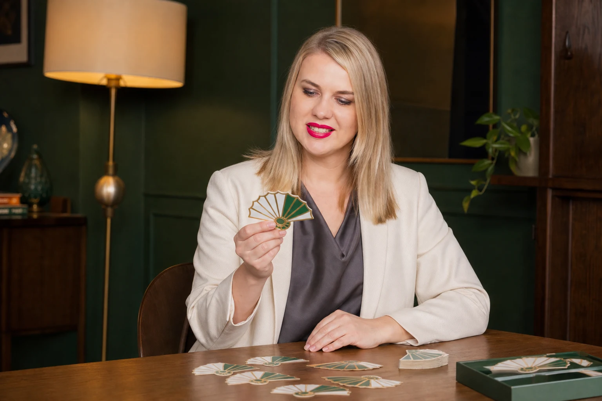

ЭТИКЕТ / САМОПРЕЗЕНТАЦИЯ / КОММУНИКАЦИИ
Впечатление,
которое работает
на вас.
Помогаю увереннее общаться, представлять себя и понимать язык жестов — в жизни и в работе.
Знакомство начинается с простого «здравствуйте».
ДАВАЙТЕ ЗНАКОМИТЬСЯ
Этикет и общение.
Больше, чем слова.
Впечатление складывается из деталей: жеста, взгляда, интонации. Их можно сделать своей опорой.
Я Алла Усынина — специалист по этикету и кинетике, педагог-психолог. Создала центр «ЭтиКин», авторские тренинг-игры и книгу «Сила впечатления».
Больше обо мне на etikin.ru ↗ФОРМАТЫ РАБОТЫ
Игры и тренинги.
От знаний к практике.

Живой диалог. Новые открытия.КНИГА АЛЛЫ УСЫНИНОЙ
Сила
впечатления
«То, о чем мы молчим, проявляется в жестах».
Алла Усынина, «Сила впечатления»
В книге Алла рассматривает четыре стороны впечатления: движения тела, внешний вид, манеры и речь. И показывает, как они проявляются в деловом, светском и личном общении.
О книге на основном сайте ↗О ПРОГРАММАХ
Перед знакомством.
С какими темами работает Алла Усынина?
Этикет, самопрезентация, невербальные коммуникации и управление впечатлением. Форматы работы — тренинги и авторские игры.
Можно ли подобрать программу для компании?
Да. Алла разрабатывает индивидуальные тренинги с учётом задач и специфики компании. Обсудить программу можно в Telegram или MAX.
Что такое «Веер баланса»?
«Веер баланса» — авторская тренинг-игра Аллы Усыниной по управлению впечатлением.
БУДЕМ НА СВЯЗИ
Начнём с
вашей задачи.
Расскажите, что для вас важно.
Вместе подберём формат работы.
Напишите в удобный мессенджер